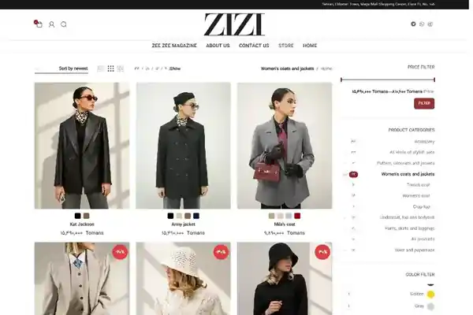
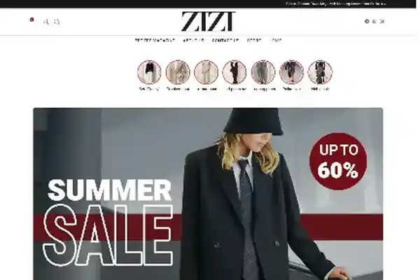

Anteprime locali incluse nel portfolio: shop page e home page.
Contesto
Il cliente richiedeva un e-commerce per un brand di moda. Ho seguito l’intero progetto: dominio e hosting, installazione WordPress, tema e plugin, design, WooCommerce, sicurezza, backup, manutenzione e SEO.
La sfida
Trasformare un brief molto essenziale in un e-commerce RTL chiaro, gestibile e pronto per la vendita.
Il mio contributo
- Progettazione completa delle principali pagine e-commerce, della navigazione e delle schede prodotto.
- Configurazione di WordPress, WooCommerce, tema, plugin e funzionalità prodotto.
- Gestione tecnica continuativa: hosting, DNS, SSL/HTTPS, plugin, backup, restore e troubleshooting.
- SEO on-page e tecnica con Rank Math e Google Search Console.
Risultato / consegna
Consegna di un e-commerce completo e operativo, con catalogo strutturato, varianti di prodotto e un flusso di acquisto completo.
Il case study descrive esclusivamente il lavoro svolto da me nel periodo indicato. Dove il mio contributo era solo SEO, questo è dichiarato esplicitamente.